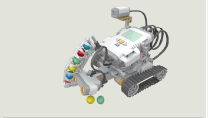
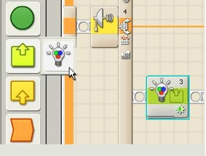
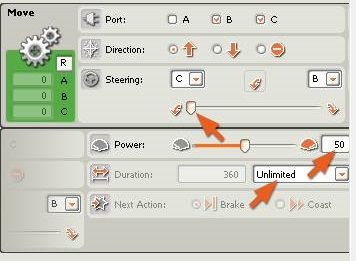
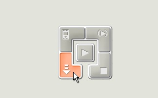
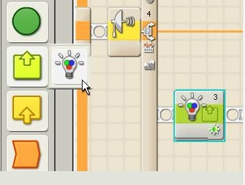
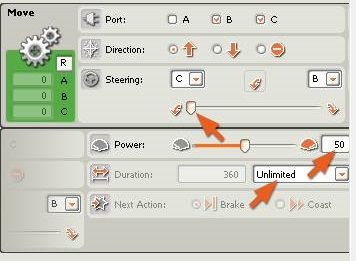
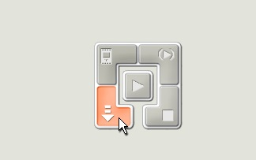

Programarea robotului Shooterbot
In continuare va vom arata cum sa programati robotul ShooterBot!
III. Eliminarea intrusilor
Deschideti programul Lego Mindstorms NXT 2.0.
Din Meniu, accesati File --> New.
Din Meniul "Common" din stanga, trageti pe ecran optiunea "Loop" precum in figura de mai jos:
Din Meniul "Common" din stanga, trageti pe ecran optiunea "Switch" precum in figura de mai jos:
Dati click stanga pe ceea ce tocmai ati adaugat si, in partea de jos veti observa proprietatile casetei "Switch".
Alegeti "Ultrasonic Sensor" si modificati distanta astfel incat aceasta sa fie mai mica de 40 cm, precum in imaginea de mai jos:
La baza meniului "Common" (exista 3 optiuni: cerc, 3 patrate, si 2 dreptunghiuri), alegeti optiunea "Complete" (cele 3 patrate).
Dati Click pe caseta "Action" si in final selectati caseta "Color Lamp" precum in figura de mai jos:
Acum, pentru aceasta noua caseta, va trebui sa modificati portul si culoarea, precum in figura urmatoare:
Din Meniul "Common" din stanga, trageti pe ecran prima optiune ("Move") precum in figura de mai jos:
Acum, pentru noua caseta, va trebui alegeti optiunea "Stop" (va opri robotul), precum in figura de mai jos:
Din meniul "Complete", alegeti optiunea "Action" si trageti pe ecran caseta "Sound" precum in figura de mai jos:
Acum, pentru noua caseta, alegeti un sunet precum "Object Detected", precum in figura de mai jos:
Din meniul "Complete", alegeti optiunea "Flow" si trageti pe ecran caseta "Wait" precum in figura de mai jos:
 Acum, pentru noua caseta, setati "Time" pentru optiunea "Control", precum in figura de mai jos:
Din meniul "Complete", alegeti optiunea "Flow" si trageti pe ecran caseta "Switch" (in continuare la ceea ce ati realizat pana acuma), precum in figura de mai jos:
Pentru aceasta ultima caseta adaugata, alegeti "Ultrasonic Sensor" si modificati distanta astfel incat aceasta sa fie mai mica de 40 cm, precum in imaginea de mai jos:
Din nou, din meniul "Complete", optiunea "Action", alegeti si trageti pe ecran caseta "Color Lamp", precum in figura de mai jos:
Tot din meniul "Complete", optiunea "Action", alegeti si trageti pe ecran caseta "Sound", precum in figura de mai jos:
Pentru caseta "Sound" alegeti un sunet (ex. "Alarm"), precum in figura de mai jos:
In continuare, din meniul "Common", adaugati caseta "Move", precum in figura de mai jos:
Pentru noua caseta setati proprietatile asa cum le puteti vedea in figura de mai jos:
Din meniul "Complete", optiunea "Action", selectati si trageti pe ecran un nou "Color Lamp", precum in figura de mai jos:

Pentru aceasta caseta, setati-i culoarea (pe care trebuie sa o recunoasca) sa fie verde, precum in figura de mai jos:
In continuare, din meniul "Common", adaugati caseta "Move", precum in figura de mai jos:
Pentru noua caseta setati proprietatile asa cum le puteti vedea in figura de mai jos:
Explicatie: optiunea ii spune robotului sa mearga in fata si s vireze spre stanga pe o perioada nelimitata.

Conectati micro-controlerul NXT (rugati-o pe doamna profesoara sa va ajute) la calculator si apoi descarcati programul precum in figura de mai jos:

Effect: Robotul ar trebui sa se miste inainte pana la intalnirea linii rosii. In momentul in care detecteaza
linia rosie se va invarti si intoarce spre pozitia initiala.
In final, asa ar trebui sa arate programul construit de voi:
Acum, pentru noua caseta, setati "Time" pentru optiunea "Control", precum in figura de mai jos:
Din meniul "Complete", alegeti optiunea "Flow" si trageti pe ecran caseta "Switch" (in continuare la ceea ce ati realizat pana acuma), precum in figura de mai jos:
Pentru aceasta ultima caseta adaugata, alegeti "Ultrasonic Sensor" si modificati distanta astfel incat aceasta sa fie mai mica de 40 cm, precum in imaginea de mai jos:
Din nou, din meniul "Complete", optiunea "Action", alegeti si trageti pe ecran caseta "Color Lamp", precum in figura de mai jos:
Tot din meniul "Complete", optiunea "Action", alegeti si trageti pe ecran caseta "Sound", precum in figura de mai jos:
Pentru caseta "Sound" alegeti un sunet (ex. "Alarm"), precum in figura de mai jos:
In continuare, din meniul "Common", adaugati caseta "Move", precum in figura de mai jos:
Pentru noua caseta setati proprietatile asa cum le puteti vedea in figura de mai jos:
Din meniul "Complete", optiunea "Action", selectati si trageti pe ecran un nou "Color Lamp", precum in figura de mai jos:

Pentru aceasta caseta, setati-i culoarea (pe care trebuie sa o recunoasca) sa fie verde, precum in figura de mai jos:
In continuare, din meniul "Common", adaugati caseta "Move", precum in figura de mai jos:
Pentru noua caseta setati proprietatile asa cum le puteti vedea in figura de mai jos:
Explicatie: optiunea ii spune robotului sa mearga in fata si s vireze spre stanga pe o perioada nelimitata.

Conectati micro-controlerul NXT (rugati-o pe doamna profesoara sa va ajute) la calculator si apoi descarcati programul precum in figura de mai jos:

Effect: Robotul ar trebui sa se miste inainte pana la intalnirea linii rosii. In momentul in care detecteaza
linia rosie se va invarti si intoarce spre pozitia initiala.
In final, asa ar trebui sa arate programul construit de voi: